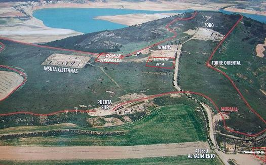
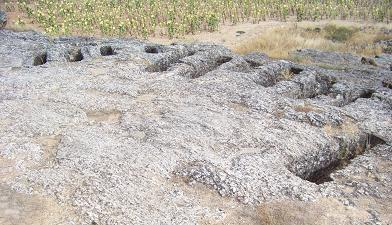
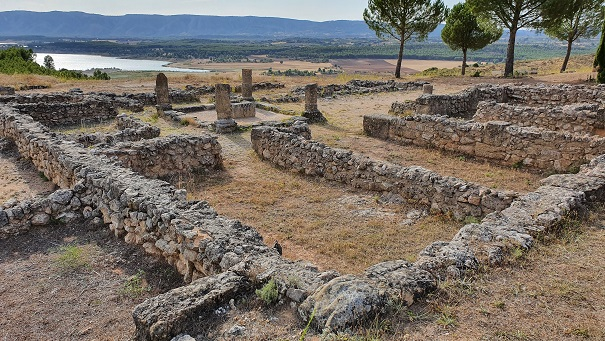
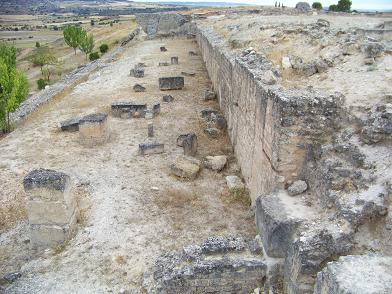
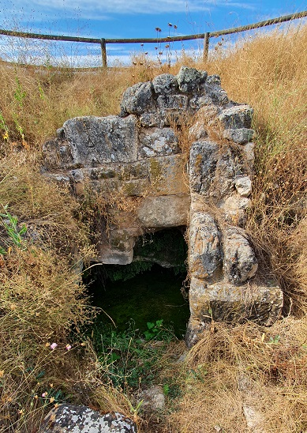

|
E R C A V I C A
|
|
Ercávica se localiza sobre un
promontorio a 5km del pueblo de Cañaveruelas.
Ercávica obtuvo el estatuto de municipium en
época de augustea (17-15 a.e.c.) y el derecho a emitir moneda.

La necrópolis se localiza junto al acceso al yacimiento, integrada por fosas excavadas en la roca, de época tardorromana y una cámara semihipogea.

También se ha hallado la puerta oriental de la ciudad, flanqueada por una torre monumental construida son sillares. La excavación del interior de la torre desveló, que albergaba unas latrinae públicas.
La denominada Domus 4 data del siglo I, tiene un peristilo cuadrado porticado, que se ha reconstruido (2015). De las dependencias se han conservado algunos fragmentos de su decoración. En el área abierta al patio había un pozo y varios muros de mampostería del siglo I a.e.c.
Entre las domus próximas al foro, destaca la llamada Casa del Médico, conocida así por encontrar en su excavación material médico. Con la distribución típica de las domus, las estancias se articulan alrededor de un patio con un impluvium rodeado de cuatro columnas.

Se han hallado varios decumani, vía que recorren la manzana de casas de este a oeste, también se ha encontrado el enlosado original de alguna calle, el estuco de una vivienda y pórticos en el cardo maximus. La fotografía del estuco policromado fue tomada en el año 2003. En septiembre de 2011, lamentablemente había desaparecido.
Su foro es rectangular, pavimentado con grandes losas de piedra, rodeado
por pórticos. Al sur del foro, se halla la basílica. Está compuesta por
tres naves, destacando la intermedia por su tamaño y altura. En el lado
occidental del foro se localizan las tabernae, que se abrían hacia el
cardo maximus.
En el lado oriental se construyo un criptopórtico con dos alturas y un basamento monumental, para salvar el desnivel y poder ampliar el área de la plaza.

La denominada Domus Aterrazada data del siglo I-II. Destaca por su aprovechamiento del terreno aterrazando sus dependencias de la parte septentrional. Es una vivienda de grandes dimensiones articulada en su mayoría por un corredor de este-oeste, que une las dos partes de la manzana, uniendo dos peristilos con pozo. Se han conservado abundantes elementos arquitectónicos, mosaicos y pinturas murales.
|
|
|
|
|
|
************** En las excavaciones se han hallado restos que podrían pertenecer a un circo, a un teatro.....
Próxima a la entrada del yacimiento se localiza la fuente de El Pocillo, manantial natural, que en época romana se construyó en piedra, y posteriormente se utilizó como baptisterio visigodo para bautismo bajo el rito arriano.

Con posterioridad, Ercávica pasará a ser conocida como Arcávica, siendo mencionada en los Concilios de Toledo. Ésta se ha identificado con el núcleo surgido en la segunda mitad del siglo VI en torno al monasterio Servitano, fundado por el abad Donato, y ubicado a 2 km al sur de la Ercávica romana. Cañaveruelas fue nombrado Municipio Templario mediante decreto balival.
Aun con todo, Ercávica está por descubrir. Las excavaciones apenas se ha destapado un 25% de su totalidad.
|